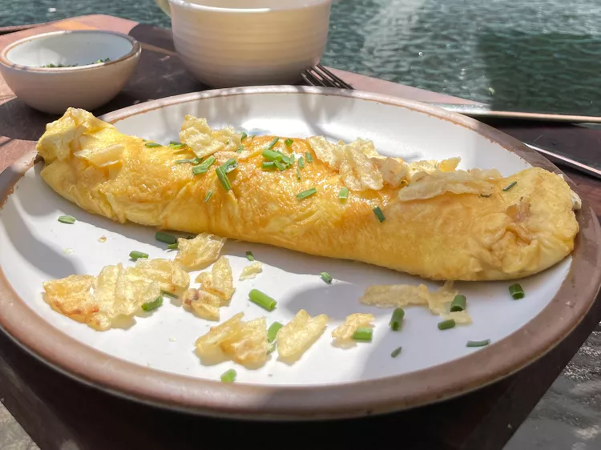

How to make THE Omelete from The Bear
TV's "The Bear" featured dozens of iconic cooking scenes. However,
Sydney's omelete creation holds a special place in our hearts. So, in this
recipe we're going to replicate that eggy goodness.

Steps:
- crack 3 large eggs in a mixing container
- whisk the eggs together until the consistency is nice and thick
- throw 1 to 2 tablespoons of salted butter on a non stick pan
- pour you whisked eggs into the pan
-
after the the base layer of egg has started to solidfy, spread some
Boursin cheese on top of the eggs
- Fresh chives, thinly sliced
- Potato chips, gently crushed